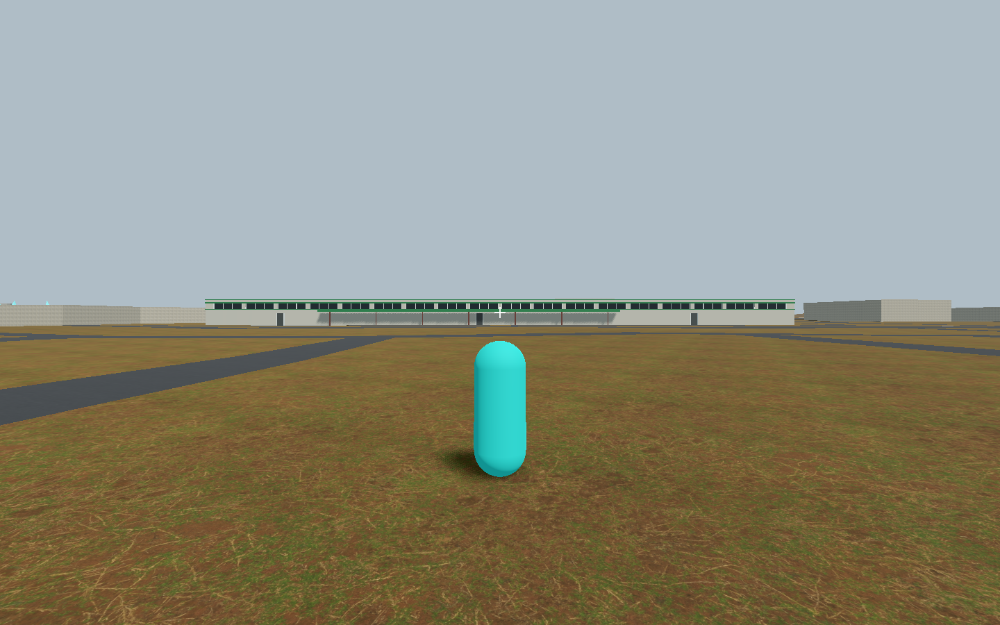
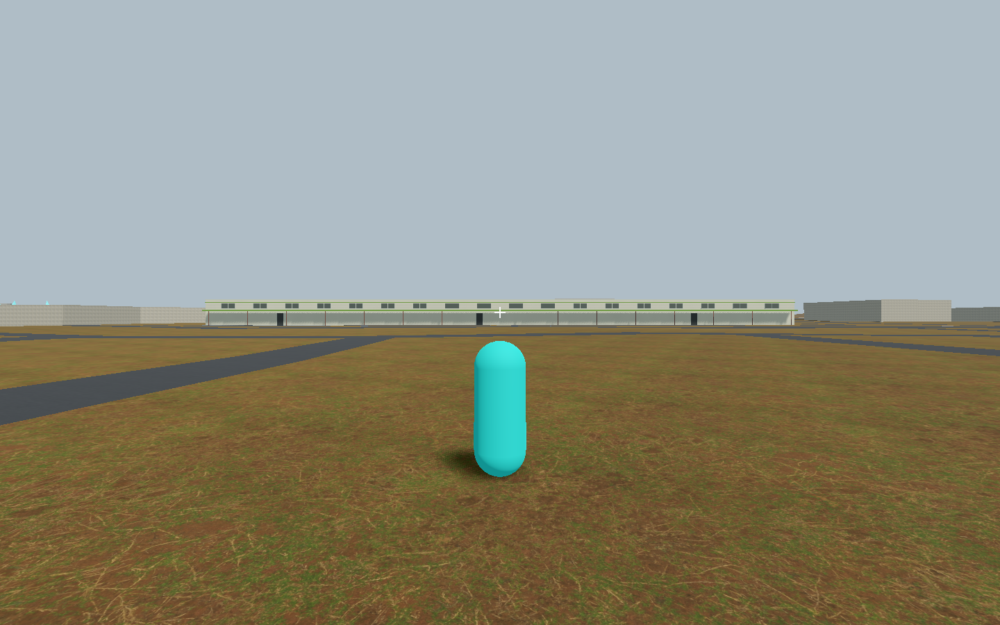
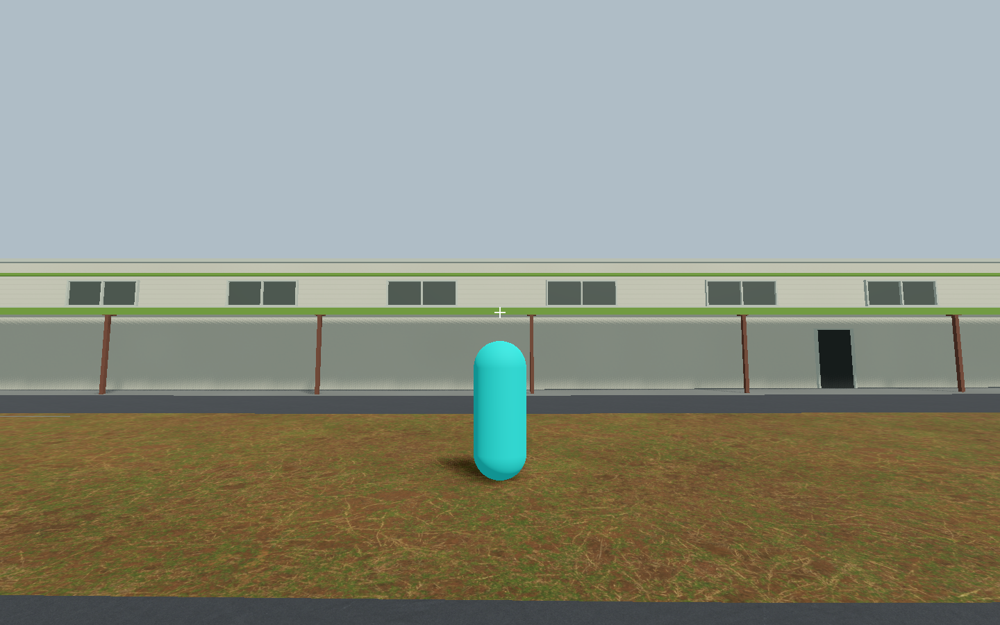

Observed WSW architecture approved; normal shadow stippling unresolved. No stock mechanics PASS, promotion or recognition credit.
Scope · Exact provenance · Draft gallery



Both200m-distance and revised-cascade trials rejected; original Sun state restored. These are control images, not trial settings.